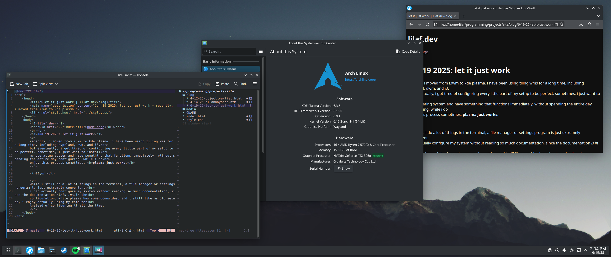

recently, i moved from i3wm to kde plasma. i have been using tiling wms for a long time, including hyprland, dwm, and i3.
but eventually, i got tired of configuring every little part of my setup to be perfect. sometimes, i just want to install
my operating system and have something that functions immediately, without spending the entire day configuring. while i do
enjoy this process sometimes, plasma just works.
while i still do a lot of things in the terminal, a file manager or settings program is just extremely convenient.
i can actually configure my system without reading so much documentation, since the documentation is in the
configuration. while plasma has some downsides, and i still like my old setups, i enjoy actually using my computer
instead of configuring it all the time.
